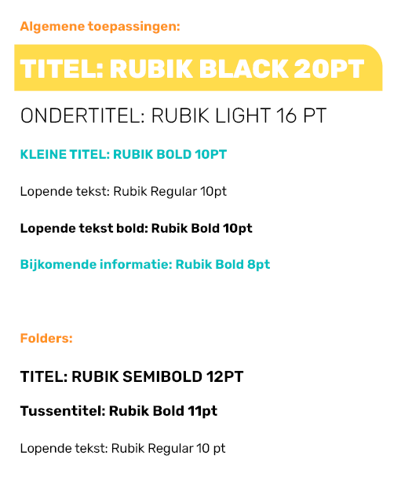
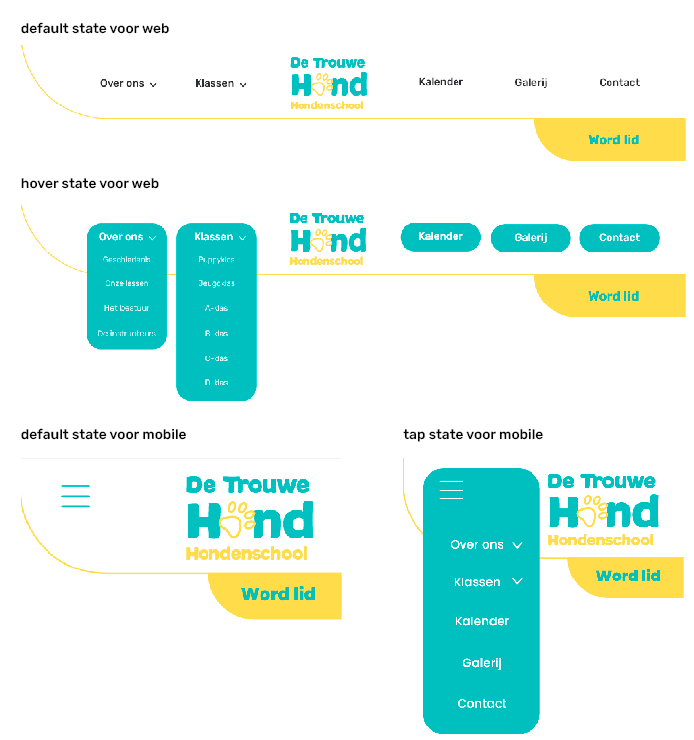

Lay-out guidelines
Bij het opmaken van een document wordt de beschikbare oppervlakte telkens opgedeeld in verschillende kolommen -
die altijd deelbaar moeten zijn door twee, met een tussenruimte van zes millimeter.
Men kan vervolgens met deze kolommen gaan spelen om dynamiek te creëren in de lay-out.
De marges zijn variabel naar gelang de toepassing.
Dit zijn enkele voorbeeld bladspiegels die al
uitgetest werden en goed bruikbaar zijn:
VOOR FOLDERS
Formaat: A4 - 21 x 29,7 cm
Zetspiegel: 269 x 182 mm
Marges: 14 mm
Kolommen: 6
Tussenruimte: 12 mm
Afloop: 3 mm
VOOR POSTERS
Formaat: A3 - 42 x 29,7 cm
Zetspiegel: 257 x 380 mm
Marges: 20 mm
Kolommen: 6
Tussenruimte: 8 mm
Afloop: 3 mm
VOOR FORMULIEREN
Formaat: A4 - 21 x 29,7 cm
Zetspiegel: 170 x 257 mm
Marges: 20 mm
Kolommen: 4
Tussenruimte: 6 mm
Afloop: 3 mm

